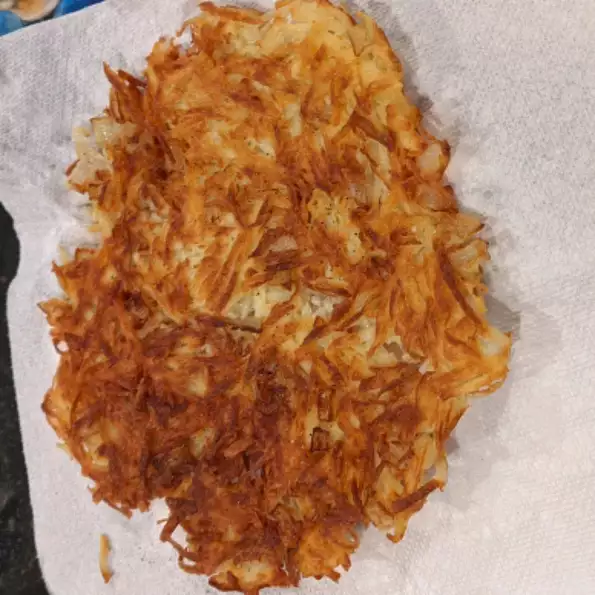

Hashbrowns

Today we're going to be making 'Hashbrowns'.
Good old fashioned restaurant-style hash browns.
Perfect with hot pepper sauce and ketchup!
Ingredients
- Russet potatoes
- Onion, finely chopped
- Olive oil
- Salt and pepper to taste
Steps
- Rinse shredded potatoes until water is clear, then drain and squeeze dry.
- Place shreds in a bowl, and mix in the onion
- Heat about 1/4 inch of oil in a large heavy skillet over medium-high heat.
- When oil is sizzling hot, place potatoes into the pan in a 1/2 inch thick layer.
- Cook until nicely browned on the bottom, then flip over and brown on the other side.
- Remove from pan, and drain on paper towels. Season with salt and pepper and serve immediately.
- Enjoy.